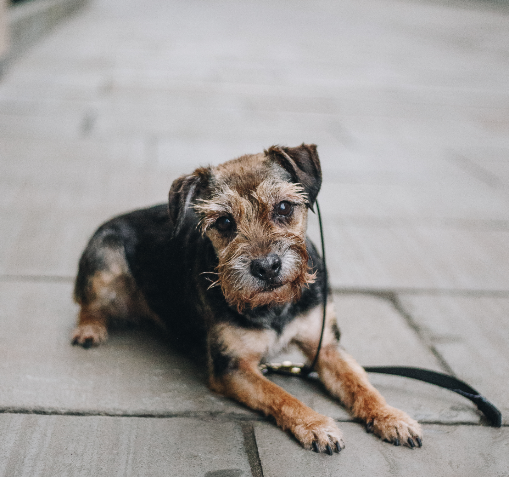
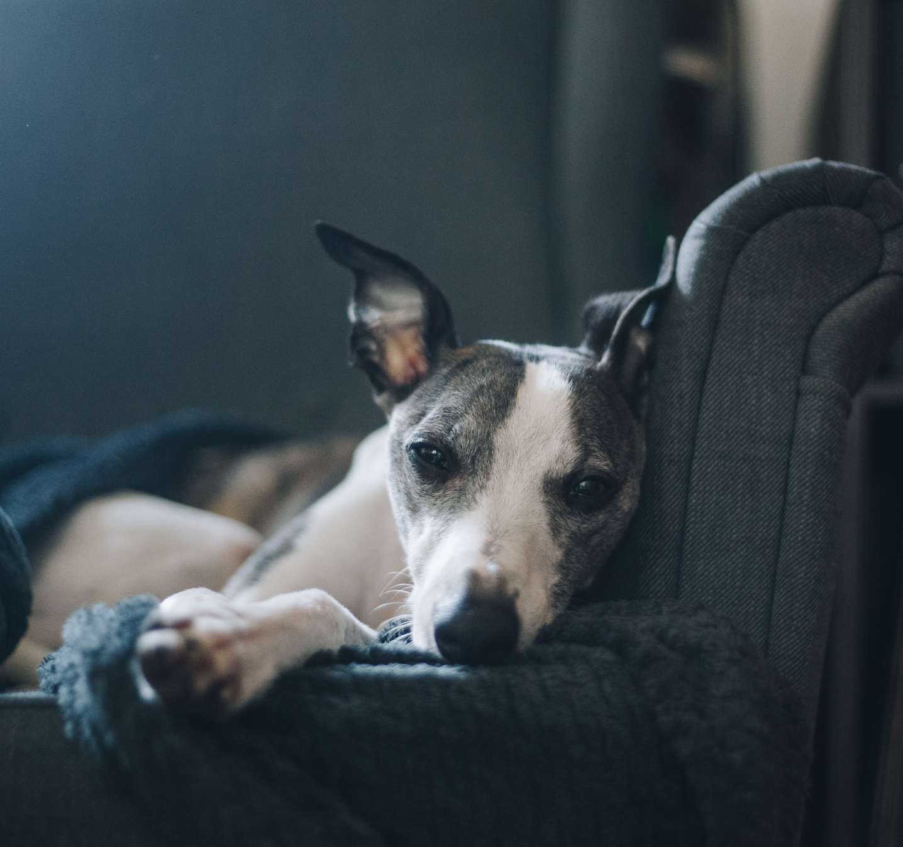

Dog trainer & walker
Laura focuses on obedience training to motivate dogs and their owners to develop a strong and happy relationship. Laura walks and trains dogs of all ages and breeds, from puppies who need basic obedience training to adult dogs with more complex issues.

Based in Bath
Laura’s commitment to the Bath community and passion for helping dogs and their owners is evident in everything she does, from constantly learning by shadowing other trainers and walkers to communicating with her clients on a regular basis.
There are three services to choose from
Depending on your exact needs you can pick from either solo walks, walk & train or drop-in visits

Solo walk
1 hour - £18
Ideal for dogs who are anxious, your dog gets unvidided attention from Laura ensuring they get engagement and exercise. Rest assured your dog will be in good hands, receiving the attention and care they deserve.

Walk & train
1 hour - £25
Perfect for owners who want to continue with their own ongoing training covering basic obedience such as loose leash walking, stays, recall and other basic manners. Laura helps your dog stay well-behaved, ensuring a strong and positive bond between dog and owner.
